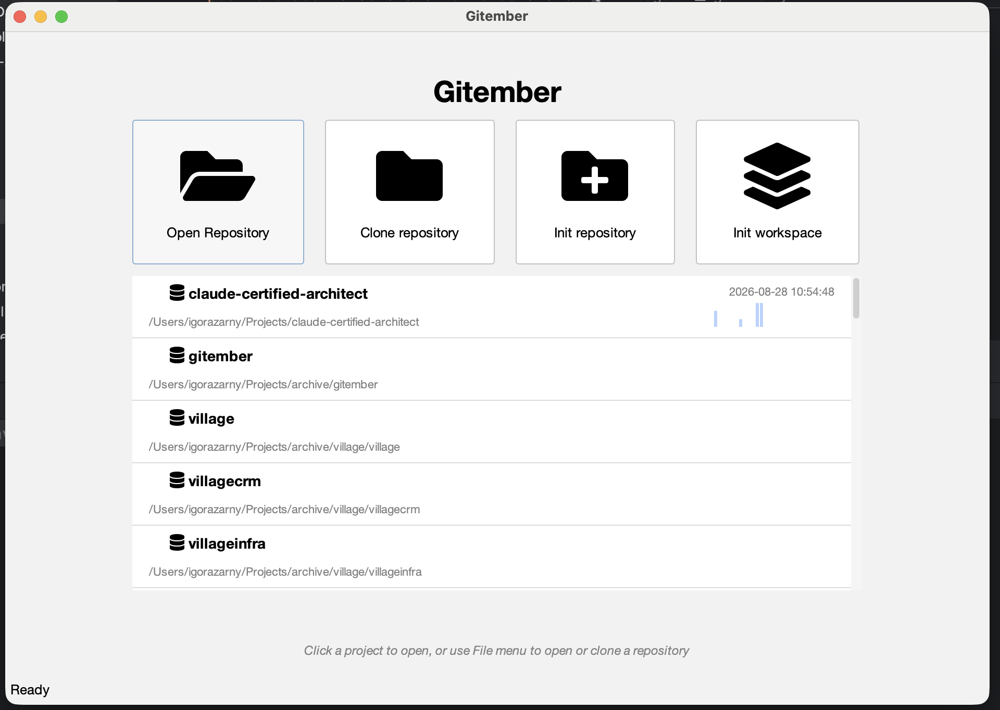
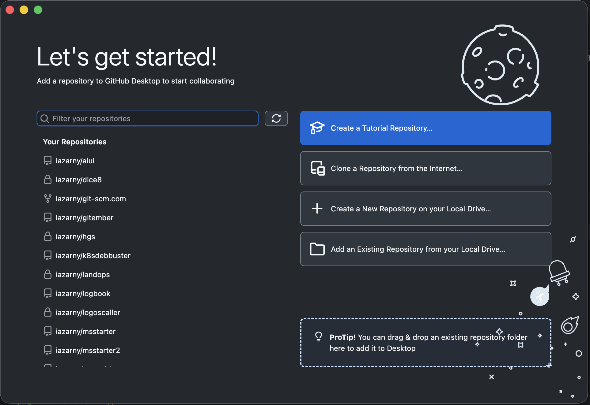
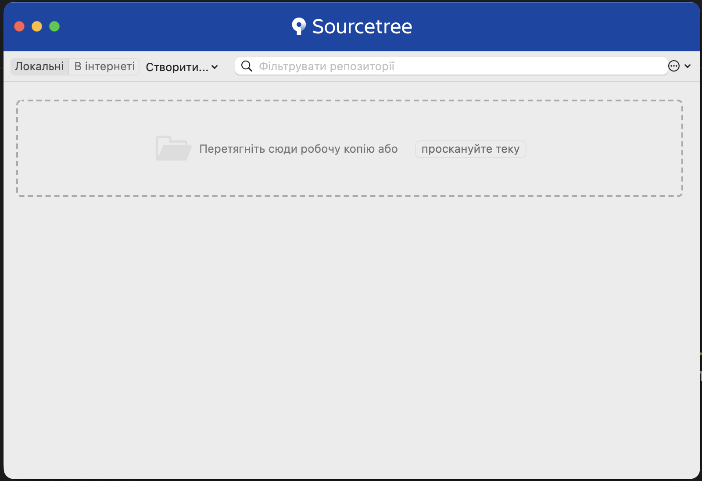
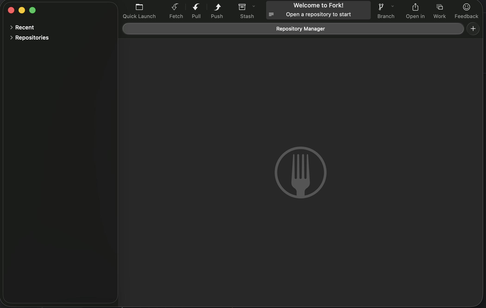

1 Quick Summary
| Gitember | GitHub Desktop | Sourcetree | GitKraken | Fork | |
|---|---|---|---|---|---|
| Version | 3.4.2 | 3.6.4 | 4.2.19 | 12.4.0 | 2.66.7 |
| Price | Free | Free | Free | Community - Free Pro - $10 per month Advanced - $14 per month |
$59.99 one-time |
| Open source | ✅ | ✅ | ❌ | ❌ | ❌ |
| Account required | ❌ | ⚠️ GitHub acct | ⚠️ Atlassian acct | ✅ Required | ❌ |
| Windows | ✅ | ✅ | ✅ | ✅ | ✅ |
| macOS | ✅ | ✅ | ✅ | ✅ | ✅ |
| Linux | ✅ | ❌ | ❌ | ✅ | ❌ |
2 Installation and configuration
| Gitember | GitHub Desktop | Sourcetree | GitKraken | Fork | |
|---|---|---|---|---|---|
| Installer size ¹ | 89 Mb | 304 Mb | 67 Mb | 220 Mb | 32 Mb |
| Installed size | 185 Mb | 681 Mb | 168 Mb | 626 Mb | 106 Mb |
| Installation experience | ✅ | ❌Not a regular installer. Unzip and run application |
❌Not a regular installer. Unzip the run application Move to the /Application manually |
✅ | ✅ |
| First startup | ✅Scan and add repos | ✅Scan and add repos | ❌Look confusing. Need to clone or Open local repo |
Open release note | Empty workplace Need to open/init/clone repo |
| First startup |  |
 |
 |
 |
|
| Git detection version selection |
✅Not needed | ✅Not needed | ✅Existing and build in | ✅Not needed | ✅Existing |
| SSH configuration | .ssh only Global |
.ssh only Global |
.ssh only Global |
✅Can chose key location Can generate key |
.ssh only Global |
| HTTPS authentication | Per repository | Per repository | Per account | Per repository | Per repository |
| GPG signing | ✅PGP/GPG or SSH commit and tag signing | ❌To get GitHub Desktop to sign your commits with PGP/GPG, you must configure your global Git settings to sign commits by default. GitHub Desktop does not have a native toggle menu for GPG signing; instead, it honors your global .gitconfig settings and relies on an external GPG agent to handle your secret key passphrase. | ✅You can set up GPG commit signing in SourceTree by configuring your local repository settings and enabling your GPG key | ✅You can enable PGP/GPG commit signing in GitKraken Desktop. | ❌The Fork Git client does not have a native, built-in button or settings panel for PGP/GPG commit signing, but it will successfully sign commits if you configure global Git signing on your system |
| Git user.name / user.email | ✅ plus overwrite per project | ✅ | ✅ | ✅ | ✅ |
| External editor | ✅Not needed Build in |
||||
| External diff tool | ✅Not needed Build in |
||||
| External merge tool | ✅Not needed Build in |
||||
| Light/dark theme | ✅ | ✅ | ✅ | ✅set of different themes | ✅ |
| UI customization | Font size, Date / Time formats | ||||
| Keyboard shortcuts | |||||
| Startup time | |||||
| Memory usage | |||||
| Internet requirement | |||||
| Account requirement |
¹ Mac Silicon
Local Repository Creation & Cloning
| Gitember | GitHub Desktop | Sourcetree | GitKraken | Fork | SmartGit | |
|---|---|---|---|---|---|---|
| Create new repository | ||||||
| Initialize existing directory | ||||||
| Add README | ||||||
| Add .gitignore | ||||||
| Initial commit | ||||||
| Change default branch | ||||||
| Open existing repository |
Remote Repository
| Gitember | GitHub Desktop | Sourcetree | GitKraken | Fork | SmartGit | |
|---|---|---|---|---|---|---|
| Clone HTTPS repository | ||||||
| Clone SSH repository | ||||||
| Clone private repository | ||||||
| Clone large repository | ||||||
| Shallow clone | ||||||
| Shallow clone | ||||||
| Clone specific branch |
Working Tree & Staging
| Gitember 3 | GitHub Desktop | Sourcetree | GitKraken | Fork | SmartGit | |
|---|---|---|---|---|---|---|
| Detect modified files | ||||||
| Detect untracked files | ||||||
| Stage file | ||||||
| Unstage file | ||||||
| Stage individual hunk | ||||||
| Stage individual line | ||||||
| Discard file changes | ||||||
| Discard hunk | ||||||
| Rename file | ||||||
| Delete file | ||||||
| Add binary file | ||||||
| Add large file | ||||||
| Ignore file | ||||||
| Edit .gitignore |
Diff viewer
| Gitember 3 | GitHub Desktop | Sourcetree | GitKraken | Fork | SmartGit | |
|---|---|---|---|---|---|---|
| Unified diff | ||||||
| Side-by-side diff | ||||||
| Syntax highlighting | ||||||
| Word-level diff | ||||||
| Line-level diff | ||||||
| Binary file handling | ||||||
| Image diff | ||||||
| Large-file performance | ||||||
| File history | ||||||
| Compare branches | ||||||
| Compare revisions | ||||||
| Compare arbitrary files | ||||||
| Compare directories |
Commits
| Gitember 3 | GitHub Desktop | Sourcetree | GitKraken | Fork | SmartGit | |
|---|---|---|---|---|---|---|
| Create commit | ||||||
| Amend commit | ||||||
| Empty commit | ||||||
| Edit commit message | ||||||
| Change author | ||||||
| Change committer | ||||||
| Signed commit | ||||||
| Verify signature | ||||||
| Commit template | ||||||
| Conventional commit support | ||||||
| Commit message generation | ||||||
| Compare arbitrary files |
Commit manipulation
| Gitember 3 | GitHub Desktop | Sourcetree | GitKraken | Fork | SmartGit | |
|---|---|---|---|---|---|---|
| Undo last commit | ||||||
| Soft reset | ||||||
| Mixed reset | ||||||
| Hard reset | ||||||
| Revert commit | ||||||
| Cherry-pick commit |
Branch Management
| Gitember 3 | GitHub Desktop | Sourcetree | GitKraken | Fork | SmartGit | |
|---|---|---|---|---|---|---|
| Create branch | ||||||
| Create branch from selected commit | ||||||
| Create branch from remote branch | ||||||
| Rename branch | ||||||
| Delete local branch | ||||||
| Delete remote branch | ||||||
| Delete remote branch | ||||||
| Checkout branch | ||||||
| Checkout detached HEAD | ||||||
| Switch branch with uncommitted changes | ||||||
| Branch comparison | ||||||
| Track upstream branch | ||||||
| Set upstream | ||||||
| Change upstream | ||||||
| View ahead/behind count | ||||||
| Stale branch detection | ||||||
| Prune remote branches |
Merge Operations
| Gitember 3 | GitHub Desktop | Sourcetree | GitKraken | Fork | SmartGit | |
|---|---|---|---|---|---|---|
| Fast-forward merge | ||||||
| No-ff merge | ||||||
| Squash merge | ||||||
| Merge commit creation | ||||||
| Merge conflict handling | ||||||
| Abort merge | ||||||
| Continue merge | ||||||
| Resolve text conflicts | ||||||
| Resolve binary conflicts | ||||||
| Resolve rename conflicts | ||||||
| Resolve delete/modify conflicts | ||||||
| Merge preview |
Rebase
| Gitember 3 | GitHub Desktop | Sourcetree | GitKraken | Fork | SmartGit | |
|---|---|---|---|---|---|---|
| Rebase branch | ||||||
| Rebase onto specific branch | ||||||
| Interactive rebase | ||||||
| Reorder commits | ||||||
| Edit commit | ||||||
| Reword commit | ||||||
| Squash commits | ||||||
| Fixup commits | ||||||
| Drop commit | ||||||
| Split commit | ||||||
| Rebase conflict resolution | ||||||
| Abort rebase | ||||||
| Continue rebase | ||||||
| Recover failed rebase |
Conflict Resolution
| Gitember 3 | GitHub Desktop | Sourcetree | GitKraken | Fork | SmartGit | |
|---|---|---|---|---|---|---|
| Text conflict | ||||||
| Multiple file conflicts | ||||||
| Binary conflict | ||||||
| Rename conflict | ||||||
| Delete/delete conflict | ||||||
| Modify/delete conflict | ||||||
| Submodule conflict | ||||||
| Three-way merge view | ||||||
| External merge integration |
History Exploration
| Gitember 3 | GitHub Desktop | Sourcetree | GitKraken | Fork | SmartGit | |
|---|---|---|---|---|---|---|
| Commit graph | ||||||
| Author filtering | ||||||
| Branch filtering | ||||||
| Date filtering | ||||||
| Search by message | ||||||
| Search by SHA | ||||||
| Search by file | ||||||
| Search by author | ||||||
| Blame view | ||||||
| File history | ||||||
| Folder history | ||||||
| History performance |
Remote Operations
| Gitember 3 | GitHub Desktop | Sourcetree | GitKraken | Fork | SmartGit | |
|---|---|---|---|---|---|---|
| Add remote | ||||||
| Rename remote | ||||||
| Remove remote | ||||||
| Fetch | ||||||
| Pull | ||||||
| Push | ||||||
| Push new branch | ||||||
| Push tags | ||||||
| Force push | ||||||
| Force push with lease | ||||||
| Push selected ref | ||||||
| Fetch specific branch | ||||||
| Fetch prune | ||||||
| Remote URL edit |
Tags & Releases
| Gitember 3 | GitHub Desktop | Sourcetree | GitKraken | Fork | SmartGit | |
|---|---|---|---|---|---|---|
| Annotated tag | ||||||
| Signed tag | ||||||
| Edit tag message | ||||||
| Delete local tag | ||||||
| Delete remote tag | ||||||
| Push tag | ||||||
| Push all tags | ||||||
| Checkout tag |
Stash Management
| Gitember 3 | GitHub Desktop | Sourcetree | GitKraken | Fork | SmartGit | |
|---|---|---|---|---|---|---|
| Create stash | ||||||
| Named stash | ||||||
| Stash selected files | ||||||
| Stash untracked files | ||||||
| Apply stash | ||||||
| Pop stash | ||||||
| Delete stash | ||||||
| Drop stash | ||||||
| Stash conflict handling | ||||||
| Partial stash |
Submodules
| Gitember 3 | GitHub Desktop | Sourcetree | GitKraken | Fork | SmartGit | |
|---|---|---|---|---|---|---|
| Clone with submodules | ||||||
| Initialize submodule | ||||||
| Update submodule | ||||||
| Add submodule | ||||||
| Remove submodule | ||||||
| Commit submodule change | ||||||
| Recursive update | ||||||
| Submodule diff | ||||||
| Submodule status |
Git Worktrees
| Gitember 3 | GitHub Desktop | Sourcetree | GitKraken | Fork | SmartGit | |
|---|---|---|---|---|---|---|
| Create worktree | ||||||
| Open worktree | ||||||
| Remove worktree | ||||||
| Switch worktree | ||||||
| Worktree list | ||||||
| Branch-worktree association | ||||||
| Worktree conflicts |
Git LFS
| Gitember 3 | GitHub Desktop | Sourcetree | GitKraken | Fork | SmartGit | |
|---|---|---|---|---|---|---|
| Detect LFS repository | ||||||
| Clone LFS repository | ||||||
| Download LFS files | ||||||
| Upload LFS files | ||||||
| Lock file | ||||||
| Unlock file | ||||||
| LFS diff handling | ||||||
| LFS error handling |
Advanced Git Features
| Gitember 3 | GitHub Desktop | Sourcetree | GitKraken | Fork | SmartGit | |
|---|---|---|---|---|---|---|
| Reflog view | ||||||
| Recover deleted branch | ||||||
| Recover hard reset | ||||||
| Recover deleted commit | ||||||
| Recover stash | ||||||
| Bisect support | ||||||
| Notes support | ||||||
| Sparse checkout | ||||||
| Partial clone | ||||||
| Shallow repository management | ||||||
| Alternate object databases |
Automation & Integrations
| Gitember 3 | GitHub Desktop | Sourcetree | GitKraken | Fork | SmartGit | |
|---|---|---|---|---|---|---|
| Git hooks support | ||||||
| Pre-commit hook handling | ||||||
| Post-commit hook handling | ||||||
| GitFlow support | ||||||
| GitHub integration | ||||||
| GitLab integration | ||||||
| Bitbucket integration | ||||||
| Azure DevOps integration | ||||||
| Jira integration | ||||||
| Issue linking | ||||||
| Pull request creation | ||||||
| Pull request checkout | ||||||
| Pull request review |
Performance Benchmarks
| Gitember 3 | GitHub Desktop | Sourcetree | GitKraken | Fork | SmartGit | |
|---|---|---|---|---|---|---|
| Small repository (~100 commits) | ||||||
| Medium repository (~10k commits) | ||||||
| Large repository (~100k commits) | ||||||
| Large monorepo | ||||||
| LFS repository | ||||||
| Submodule repository |
Safety & Recovery
| Gitember 3 | GitHub Desktop | Sourcetree | GitKraken | Fork | SmartGit | |
|---|---|---|---|---|---|---|
| Hard reset warning | ||||||
| Force push warning | ||||||
| Delete branch warning | ||||||
| Delete tag warning | ||||||
| Discard changes warning | ||||||
| Rebase recovery | ||||||
| Merge recovery | ||||||
| Abort operations | ||||||
| Undo support | ||||||
| Reflog integration |
UI/UX Evaluation
| Gitember 3 | GitHub Desktop | Sourcetree | GitKraken | Fork | SmartGit | |
|---|---|---|---|---|---|---|
| Discoverability | ||||||
| Learnability | ||||||
| Visual clarity | ||||||
| Keyboard-first workflow | ||||||
| Mouse efficiency | ||||||
| Screen space usage | ||||||
| Commit graph quality | ||||||
| Dark theme quality | ||||||
| Power-user friendliness | ||||||
| Beginner friendliness |
Enterprise & Team Workflows
| Gitember 3 | GitHub Desktop | Sourcetree | GitKraken | Fork | SmartGit | |
|---|---|---|---|---|---|---|
| Multiple accounts | ||||||
| Multiple SSH keys | ||||||
| Corporate proxy | ||||||
| Smartcard support | ||||||
| Hardware security keys | ||||||
| Commit signing policies | ||||||
| Branch protection awareness | ||||||
| Large repository handling | ||||||
| Offline operation |